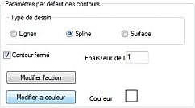
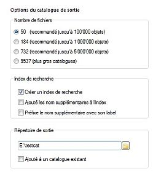

CATGEN
Les fichiers de catalogues qui contiennent les données pour n'importe quel objet céleste sont disponible par millier depuis les sites web du CDS ou de l'ADC, ou depuis d'autres sources. Chacun contient des informations sur quelques dizaines ou jusqu'à plusieurs millions d'objets.
Le but de ce programme est de préparer un catalogue sous forme de fichier texte pour l'utiliser avec le programme Cartes du Ciel.
Du fait du grand nombre de données disponible actuellement il est impossible de faire un choix valable pour toutes les utilisations, il vaut mieux que chacun puisse assembler les données qui conviennent le mieux à ses intérêts à partir des catalogues originaux des professionnels. Un autre avantage est de pouvoir disposer rapidement des données dès qu'elles sont publiées.
Un catalogue préparé sous un format binaire avec cet utilitaire est bien plus performant que d'utiliser directement le fichier texte comme catalogue externe.
Il s'agit de simples fichiers textes dont chaque ligne représente un objet et dont les différentes données sont identifiées par leur colonne et leur longueur comme ci-dessous :
1 BD+44 4550 3 36042 46 000001.1+444022000509.9+451345114.44 2 BD-01 4525 6128569 235956.2-010330000503.8-003011 98.33 3 33 PscBD-06 6357 281285721002I Var? 000013.0-061601000520.1-054227 93.75 4 86 PegBD+12 5063 87 917012004 000033.8+125023000542.0+132346106.19
En général un fichier d'accompagnement (Readme) décrit le format du fichier avec beaucoup de détails. Des informations sur ce fichier sont disponibles ici .
Byte-by-byte Description of file: catalog.dat -------------------------------------------------------------------------------- Bytes Format Units Label Explanations -------------------------------------------------------------------------------- 1- 4 I4 --- HR [1/9110]+ Harvard Revised Number = Bright Star Number 5- 14 A10 --- Name Name, generally Bayer and/or Flamsteed name 15- 25 A11 --- DM Durchmusterung Identification (zone in bytes 17-19) 26- 31 I6 --- HD [1/225300]? Henry Draper Catalog Number
Il est important de se familiariser avec ce fichier avant de vouloir utiliser le catalogue, il faut faire attention à plusieurs détails: unités, valeurs limites (entre parenthèses carrées), format des nombres, identifiant, format et époque des coordonnées. Un point d'interrogation indique que cette donnée n'est pas toujours présente, il faut regarder dans le fichier de donnée pour avoir une idée de sa fréquence. N'oubliez pas de lire les notes le cas échéant. Un éditeur de texte capable de lire des grand fichiers (comme PFE) est très utile.
Si les données sont disponibles seulement sous un autre format il est généralement facile d'écrire un simple programme pour les extraire et les formater, un langage de script comme Perl est très utile pour cela. Pour manipuler les fichiers CSV il y a le très bon CSVdb, Calc inclu avec OpenOffice.org a aussi des possibilités.
Il vous faut choisir quelles données inclure dans votre catalogue. Pour chaque type de catalogue il y a un nombre minimal d'information qui sont requise pour dessiner les cartes, mais vous pouvez choisir d'en ajouter d'autres qui seront affichée en cliquant sur l'objet.
Il ne faut pas oublier que plus d'information sont ajoutée, plus la taille des fichiers sur le disque de l'ordinateur sera important.
Ce n'est donc pas forcément une bonne idée de vouloir inclure toutes les informations disponibles, prenez votre temps pour déterminer ce dont vous avez besoin. Il est toujours possible de faire une version complète pour l'ordinateur principal et une autre version plus compacte pour l'ordinateur portable qui à un disque plus petit.
Structure de CATGEN
CATGEN a quatre étapes et une page pour chacune :
- Page 1 Choisir le fichier d'entrée, le nom du catalogue et son type
- Page 2 Régler des paramètres généraux selon le type de catalogue
- Page 3 Choisir les données du fichier d'entrée à inclure dans le catalogue
- Page 4 Régler les options du catalogue et le construire
A chaque étape, les paramètres peuvent être sauvés dans un fichier ”.prj”, ainsi vous pouvez interrompre la construction du catalogue et la reprendre plus tard après restauration des paramètres.
Deux boutons en bas de chaque page gèrent cette fonction :
- Enregistrer permet de créer (s'il n'existe pas encore) le fichier “xxx.prj” (xxx = nom court du catalogue).
- Charger restaure le fichier ”.prj” de votre choix et rempli les paramètres.
Page 1
 Sur la première page il faut indiquer le type d'objet dans le catalogue, cela permet d'activer des options spécifiques pour les pages suivantes. Vous avez le choix entre étoiles, étoiles variables, étoiles doubles, nébuleuses, contours de nébuleuses.
Sur la première page il faut indiquer le type d'objet dans le catalogue, cela permet d'activer des options spécifiques pour les pages suivantes. Vous avez le choix entre étoiles, étoiles variables, étoiles doubles, nébuleuses, contours de nébuleuses.
Nom court du catalogue est le nom utilisé pour identifier le catalogue, préfixer le nom des objets sur la carte, nommer les fichiers du catalogue. Il doit avoir de 1 à 4 caractères de long.
Nom long du catalogue est le nom complet du catalogue.
Cliquez sur le bouton pour choisir le fichier du catalogue. Souvent les gros catalogues sont découpés en plusieurs fichiers, dans ce cas il faut choisir tous les fichiers en même temps, l'ordre des fichiers n'a pas d'importance.
Choisir le Type du catalogue de sortie. Avec CdC V3, vous pouvez choisir une sortie sous forme de fichier texte pour les petits catalogues.
Appuyez sur le bouton Suivant » pour passer à la page suivante.
Page 2
 Choisir le format des coordonnées en entrée :
Choisir le format des coordonnées en entrée :
- Options AD Heures, minutes, secondes ou heures décimales or degrés, minutes, secondes ou degrés décimaux.
- Options DEC Degrés, minutes, secondes ou degrés décimauxs ou distance au Pôle Sud.
Equinoxeest l'époque des coordonnées pour la précession. Utilisez 2000 pour ICRS.
Epoque de la positionest l'époque par défaut de la position relative au mouvement propre, cette date peut être changée pour chaque objet à partir des données du catalogue.
Magnitude maximum est la magnitude de l'objet le plus faible du catalogue. C'est particulièrement important pour les étoiles afin de pouvoir utiliser une échelle de magnitude correcte sur la carte.
La seconde partie dépend du type du catalogue, elle est vide pour les étoiles, l'image ci-contre présente les options pour le type “Nébuleuses” (tous objets du ciel profond) :
- Dimension et Unités dimension par défaut (en cas de données manquantes) et unité.
- Echelle logaritmique cochez si la taille est un flux, par exemple dans un catalogue de radio-sources.
- Modifier les types d'objets (voir ci-dessous) redéfini les codes de types d'objets (chaines de caractères séparées par des virgules). Cliquez sur “Retour” quand vous êtes prêts.
- Modifier les Unités (voir ci-dessous) redéfini les codes d'unités (chaines de caractères séparées par des virgules). Cliquez sur “Retour” quand vous êtes prêts.

{kind=link}
 Contours de Nébuleuses * Type de tracé (utilisé pour relier les points de la liste) :
{kind=link}
- Lignes : droites
- Spline : courbes splines
- Surface : remplir la surface avec la couleur de ligne
- Contour fermé force à relier le dernier point du tracé au premier.
- Epaisseur Line auto-explicatif (en pixels)
- Couleur de ligne ou de surface (cliquer dessus pour la changer)
- Modifier l'action (voir ci-dessous) redéfini les codes d'opérations de tracé (chaines de caractères séparées par des virgules). Cliquez sur “Retour” quand vous êtes prêts.
- Modifier la couleur (voir ci-dessous) redéfini les codes couleur de tracé (chaines de caractères séparées par des virgules). Cliquez sur “Retour” quand vous êtes prêts.


Appuyez sur le bouton Suivant » pour passer à la page suivante.
Page 3

Cette page vous permet d'établir la correspondance entre les données du fichier d'entrée et celles de votre catalogue.
La liste montre les différent champs qui dépendent du type de catalogue choisit à la première page.
Cochez chaque champ que vous voulez inclure dans votre catalogue et définissez la position sur la ligne d'exemple.
Les champs obligatoires sont dans des parenthèses carrées ”[]”, les unités requises sont indiquées entre parenthèse ”()”. Voir le bouton “Advanced” ci-dessous si il est nécessaire d'ajuster les unités.
Label sera l'étiquette affichée pour ce champ.
Premier caractère et Longueur sont la position et la longueur du champ d'entrée. Vous pouvez saisir la valeur ici (obtenue du fichier Readme) ou marquer la position avec la souris sur la ligne d'exemple. Dans ce dernier cas il faut s'assurer que le champ marqué est suffisant pour la plus longue donnée du catalogue.
Liste des champs selon le type de catalogue :
Champs obligatoires :
| Etoiles | Etoiles variables | Etoiles doubles | Nebuleuses | Contour de nébuleuses |
|---|---|---|---|---|
| RA | RA | RA | RA | RA |
| DEC | DEC | DEC | DEC | DEC |
| Magnitude (V) | Magn. comp. 1 | Line operation | ||
| Separation |
Champs utilisés pour dessiner les cartes :
| Etoiles | Etoiles variables | Etoiles doubles | Nebuleuses | Contour de nébuleuses |
|---|---|---|---|---|
| Catalog ID | Catalog ID | Catalog ID | Catalog ID | Catalog ID |
| B-V | Magnitude Max. | Position angle | Nebula type | Line width |
| Proper motion RA | Magnitude Min. | Magnitude | Line color | |
| Proper motion DEC | Magnitude code | Surface brightness | Drawing type | |
| Position Epoch | Largest dimension | |||
| Magnitude B | Smallest dimension | |||
| Dimension unit | ||||
| Position angle |
Champs utilisés pour dessiner les cartes :
| Etoiles | Etoiles variables | Etoiles doubles | Nebuleuses | Contour de nébuleuses |
|---|---|---|---|---|
| Magnitude R | Period | Magn. comp. 2 | Radial velocity | Comment |
| Spectral class | Variable type | Epoch | Morphological class | String.. |
| Parallax | Maxima Epoch | Component name | Comment | Numeric.. |
| Comment | Rise Time | Spectral class comp. 1 | String.. | |
| String.. | Spectral class | Spectral class comp. 2 | Numeric.. | |
| Numeric.. | Comment | Comment | ||
| String.. | String.. | |||
| Numeric.. | Numeric.. |
A la fin de la liste vous trouverez dix valeurs chaîne et numérique que vous pouvez utiliser librement pour n'importe quelle données.
Les valeurs chaînes peuvent être utilisée comme nom secondaire pour l'objet, ce nom est utilisé si le nom principal (Catalog Id) est manquant et il peut être ajouté au fichier d'index, cocher “Utiliser ce champ comme nom supplémentaire” si vous le désirez.
 Avancé Ce bouton permet d'effectuer une transformation linéaire des données du catalogue, il est activé seulement pour les champs numériques. Par exemple pour convertir des minutes en secondes
Avancé Ce bouton permet d'effectuer une transformation linéaire des données du catalogue, il est activé seulement pour les champs numériques. Par exemple pour convertir des minutes en secondes
Une autre utilisation peut être de calculer les coordonnées des objets si elles ne sont pas directement disponible dans le catalogue.
Si le catalogue donne la position des objets en millimètre sur la plaque depuis le centre de la galaxie (p.ex: ra: 0h42m42.00s dec:+41°16'00.0”), on sait que le nord est en haut et que l'échelle de la plaque est 2 secondes par millimètre.
Les coordonnées approximatives (sans correction de plaque) en degrés sont:
DEC = 41.26667 + Xmm * (2/3600) RA = 10.67500 - Ymm * (2/3600/cos(DEC))
Choisir “Decimal degree” pour RA et DEC, indiquez la position en millimètres et utilisez les valeurs “Avancées” suivantes:
pour RA : -0.00073837 et 10.67500 pour DEC : 0.00055555 et 41.26667
Si vous devez faire une transformation plus complexe il est necessaire de le faire avant de lancer Catgen. Un script Perl permet de résoudre tout les cas de figure.
Appuyez sur le bouton Suivant » pour passer à la page suivante.
Page 4
 La dernière page permet d'indiquer des options pour le catalogue généré.
{kind=link}
Indiquez le Nombre de fichiers comme recommandé en fonction du nombre d'objet dans le catalogue, c'est très important pour obtenir des bonnes performances.
Cochez Créer un index de recherche pour créer un index permettant de rechercher les objets par leur nom.
Cochez Ajouter les noms supplémentaires* à l'index pour ajouter le nom secondaire a l'index.
Cochez Préfixe le nom supplémentaire avec son label pour préfixer les noms secondaires avec leur étiquette. Par exemple si une colonne du catalogue donne les numéros UGC des galaxies cela permet d'utiliser UGC7442 au lieu de 7442 comme entrée dans l'index.
Choisir un Répertoire de sortie pour enregistrer les fichiers du catalogue. C'est un bonne habitude d'utiliser un répertoire séparé pour chaque catalogue.
Cochez Ajouter à un catalogue existant si vous voulez ajouter ces données à un catalogue existant de même nom dans le même répertoire.
C'est utile pour créer un catalogue unique à partir de plusieurs sources. Dans ce cas la structure du catalogue doit être exactement la même, autrement les données seront perdues, veuillez faire une copie de sauvegarde avant d'essayer cette option.
Quand tout est prêt, enregistrer le projet avec le bouton Enregistrer, puis appuyer sur le bouton Construire le catalogue.
 Une boite de progression vous montre l'avancement des opérations. Il est possible de l'interrompre avec le bouton “Abort”, dans ce cas le catalogue n'est pas utilisable.
Une boite de progression vous montre l'avancement des opérations. Il est possible de l'interrompre avec le bouton “Abort”, dans ce cas le catalogue n'est pas utilisable.
Quand tout est terminé la boite de progression se ferme et vous pouvez quitter le programme avec le bouton “Close”.
Si certaines ligne du fichier catalogue ne contiennent pas des valeurs numériques valides pour certains champs ces objets ne sont pas ajoutés au catalogue mais les lignes sont écrites dans un fichier reject.txt.
C'est une bonne idée de d'abord essayer vos définitions avec un nombre limité d'objet afin d'éviter un fichier reject.txt de plusieurs millions de lignes! Vous pouvez trouver des versions pour Windows des commandes Unix head, tail et grep qui sont très utiles pour extraire quelques lignes d'un gros fichier.
Si tout c'est bien passé vous êtes maintenant près a utiliser votre catalogue. Referez-vous à la documentation de Cartes du Ciel pour définir ce catalogue dans le programme.